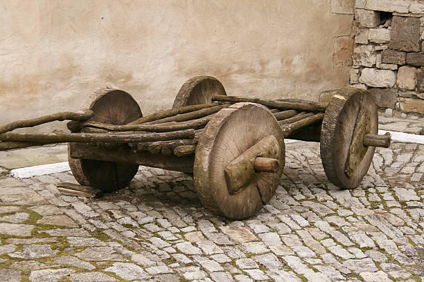
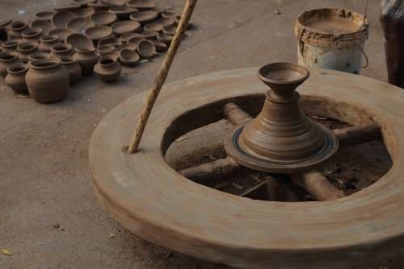

Transportul Preistoric
Roata
Roata a jucat un rol esențial în transportul uman, facilitând deplasarea rapidă și eficientă a persoanelor și mărfurilor. Folosirea roții a reprezentat o inovație semnificativă, cu implicații profunde asupra societăților antice și evoluției umane. Iată cum a fost folosită roata în Antichitate:
Căruțele și cărucioarele: Una dintre cele mai evidente și semnificative aplicații ale roții în Antichitate a fost în construcția căruțelor și cărucioarelor. Aceste vehicule cu roți au fost folosite pentru transportul de persoane, mărfuri și provizii pe distanțe lungi și scurte. Ele au fost esențiale pentru comerțul și mobilitatea umană în întreaga lume antică, facilitând schimburile comerciale și expansiunea imperiilor.

Roți de olărie: În Mesopotamia și Egiptul Antic, roțile erau folosite și în alte aplicații tehnice, cum ar fi roțile de olărie. Acestea erau folosite pentru producerea de ceramică și olărie, fiind utilizate pentru modelarea și finisarea vaselor de lut. Acest lucru a permis oamenilor să producă și să transporte vase și recipiente într-un mod mai eficient.

Sisteme de irigații: În unele regiuni, roțile au fost folosite pentru a opera sisteme de irigații, permițând transportul apei din sursele naturale către câmpurile agricole. Aceste sisteme de irigații au fost esențiale pentru agricultură și producția de alimente și au contribuit la dezvoltarea societăților agricole antice.
Roți pe aparate și mecanisme: În plus, roțile au fost folosite în diferite aparate și mecanisme în lumea antică, inclusiv în mașini simple, carul de luptă și alte dispozitive. Aceste aplicații tehnice au demonstrat versatilitatea și utilitatea roții în diferite domenii ale vieții umane.
În concluzie, folosirea roții a fost esențială pentru dezvoltarea și progresul societăților umane. Inovația și tehnologia asociată cu roata au contribuit la creșterea comerțului, mobilității și eficienței umane în lumea antică, având un impact profund asupra evoluției umane și a civilizațiilor antice.